More Info On Groundnut

Groundnut Field.
Posted: April 25, 2014. By: Admin
Groundnut is a significant oilseed, ideal for cultivation in tropic regions of the country. Groundnut (Arachis hypogaea), is a species in the legume or "bean" family. It is considered to be local in South America. These are known by many other local names such as earthnuts, ground nuts, goober peas, monkey nuts, pygmy nuts and peanuts. Despite its name and appearance, the peanut is not a nut, but rather a legume. Groundnut is the third most important oilseed of world. In India, it is available throughout the year. It is important source of protein grown mostly under rain-fed conditions. In India, Uttar Pradesh, Madhya Pradesh, Rajasthan, Gujarat, Maharashtra, Karnataka, Andhra Pradesh and Tamil Nadu are major groundnut growing states.
Climate?
Temperature:20°C - 30°C
Rainfall:50-75 cm
Sowing Temperature:25°C - 35°C
Harvesting Temperature:18°C - 25°C
Soil?
Groundnut is raised in a sandy loam as well as well drained sandy clay loam soil. Deep well- drained soil with pH of 6.5 -7 as well as having great fertility are perfect for groundnut cultivation. Spanish as well as Runner varieties are beneficial for good quality soil compared to the Virginia forms. The lack of pods is often rich in heavier grounds. An excellent climatic condition for better germination of groundnut is 31° C. Heavy and stiff clays are unsuitable for groundnut cultivation as the pod development is hampered in these soils.
Land Preparation?
After harvesting of previous crop, plough the land twice and pulverised soil to obtained good tilth of soil. Give a third ploughing if necessary for rainfed crop, in the end of June or early July. Use harrow or tillers for cultivation purpose. When land is heavily infested with perennial weeds, very deep ploughing is needed. For irrigated crop, make beds of convenient size depending upon topography. Nature of irrigation source etc. Application of 5-7 ton/acre of chicken manure or 10 ton/acre of farm yard manure or well decomposed cow dung should be done 1 month before sowing. It helps to improve soil structure along with good plant growth.
SOWING?
Spacing
Spacing to be adopted is depends upon type of variety. i.e., for semi spreading variety (M 522) use spacing of 30cm between the rows and 22.5 cm between plants and for bunchy type varieties (SG 99, SG84) use spacing of 30x15 cm.
ICRISAT method:
Polythene mulching has been attributed as one of the major improved cultivation practices for enhanced productivity of groundnut in China. When grown under polythene mulch system, groundnut matures about 10 days earlier than under non-mulched condition. Polythene mulching increases the soil temperature by retaining the heat from the sun. The increased accumulated temperature shortens the crop period. During the hot season it also protects the soil from direct sunlight.
In this technology, Broad beds and furrows are used for groundnut cultivation. Environment of Broad beds and furrows system is favourable for the development of groundnut pods, by doing little modification in the size, beds are formed along with polyethylene film mulched. Make beds of 60 cm width and leave 15 cm on the either side for the furrows. In a plot size of 4.5 m x 6.0 m, five beds can be made. After the formation of the bed and fertilizer application, spread black polythene sheet (90 cm width) over the soil surface. Polyethylene sheet of Seven micron @20kg/acre is required. Holes can be made at required spacing of 30 x10 cm before spreading of the sheets. The seed requirement is similar to normal groundnut cultivation
Seed Material?
Management of field?
Groundnut–Late Kharif Fodder/Gobhi sarson+Toria /Potato/Peas/Toria/Rabi crops rotation can be taken up successfully where irrigation facilities exist. Avoid sowing groundnut in the same field year after year, as this practice results in heavy build- up of soil-borne diseases.
FERTILIZER?
WEED CONTROL?
Weed control during first 45 days of growth period is essential for good yield. The most critical period is 3-6 weeks after sowing of crop. The average yield loss due to weed is about 30% whereas under poor management yield loss by weed may be 60%. Therefore carryout mechanical or chemical weed control during initial stage of crop growth.
Give two hoeing after the first three weeks of sowing and then after second three weeks of sowing.
No interculture would be done after the pegs have commmenced going underground. Apply Fluchoralin @ 600 ml per acre or Pendimethalin @ 1 ltr per acre as pre-emergence area followed by hand weeding once 36-40 days after planting.
Accomplish earthing up during second hand weeding/late hand weeding (in herbicide application).
It is an important operation in groundnut. Earthing up is to be done within 40-45 days after sowing as it helps for the penetration of pegs in the soil and also facilitates for increased pod development.
IRRIGATION?
Irrigation for two or three time depending upon seasonal rainfall is necessary for good crop growth. Apply first irrigation at flowering stage. If the Kharif crop is caught in a long spell of draught, especially at the pod formation stage, supplemental irrigation is given, if water is available (In pod development stage, 2 - 3 irrigations are given depending on the soil type). Another irrigation a few days before the harvest may be given for full recovery for pods from soil.
PESTS AND CONTROL???
Aphid

Its infestation is high when rainfall is low. These are black bodied tiny insects suck the sap making the plants stunted and yellow. They secrete a sticky fluid (honeydew) on the plant, which is turned black by a fungus.
White grub

The adult beetles emerge from the soil during June-July with the first showers of rain. They congregate on the nearby trees such as ber, guava, rukmanjani, grapevines, almonds etc. and feed on their leaves during night. The eggs are laid in the soil and the larvae (grubs) hatching from them eat away the rootlets or root hairs of the groundnut plants.
Hairy caterpillar

The caterpillars occur in masses and defoliate the crop, reducing the yield. Larvae are reddish brown with black band and reddish hairs on all over body.
Groundnut leaf miner

Young larvae boar into the leaflets and form small purple blotch on the leaf. Later stages larvae web the leaflets together and feed on them, remaining within the folds. Severely attacked field gives "burnt" appearance.
Termites

Termites penetrate and hollow out the tap root and stem thus kill the plant. Bore holes into pods and damage the seed. Due to infestation of termite wilting of plant is observed.
Pod borer

/The holes are observed in young plant that is plugged with excreta. Nymph is of white in early stages and later turns brown.
DISEASE AND CONTROL???
Tikka or Cercospora Leaf-spot

Necrotic circular spot surrounded by a light-yellow ring on the upper side of the leaves.
Collar-rot and Seed rot

These diseases are caused by Aspergillus niger. It causes rooting of the hypocotyl region, wilting and death of the seedlings. To control seed treatment is necessary. Treat the seed with Thiram or Captan 3 gm/kg of seed.
Alternaria leaf disease

Characterized by blighting of apical portions of leaflets which turn light to dark brown color. In the later stages of infection, blighted leaves curl inward and become brittle. Lesions produced by A. alternata are small, chlorotic, water soaked, that spread over the surface of the leaf.
Rust

Pustules appear first on the lower surface of leaf. They may be formed on all aerial plant parts apart from flower and pegs. Severely infected leaves turn necrotic and desiccate but are attached to the plant.
DEFICIENCY AND THEIR REMEDY?
Zinc Deficiency
Affected plant shows leaves in cluster form, leaves growth get stunted and appear small. Take spray of Zinc sulphate@2gm/Litre of water. Spray for two-three times with 7 days interval.
Iron deficiency:
Entire leaf get white or chlorotic. If deficiency is observed, spray crop with ferrous sulphate@5gm + citric acid@1gm/Ltr of water with one week interval. Continue spraying till deficiency get disappeared.
Potassium Deficiency:
Leaves are not growing properly and grows in irregular shape. Mature leaves show pale yellow appearance and veins remain green. To overcome deficiency apply Muriate of Potash@16-20kg/acre.
Sulphur Deficiency:
Young Plant growth get stunted and appeared smaller in size. Also leaves are small and give yellowish appearance. Maturity of plant get delayed. As a preventive measure apply Gypsum@200kg/acre at planting and pegging stage.
Harvest?

Kharif sown crop is get ready to harvest in month of November. When plant show uniform yellowing of crop along with shedding of older leaves. Crop sown during April end - May end is ready for harvesting after the monsoons are over towards end of August and September. For efficient harvesting of crop, adequate moisture should be present in soil and crop should not be overripe. The tractor- mounted groundnut-digger shaker developed at the Punjab Agricultural University may be used for quick harvesting. Harvested plants are stacked for a few days for drying and stripped afterwards. After curing, collect the crop at one place and give 2-3 shakings and beatings daily for 2 to 3 days with a toothed rake or trangli to separate pods and leaves from the stalk. Collect the pods and leaves into a heap and winnow. Dried pods in sun for 4 or 5 days before storage.
On cloudy days removed pods and then immediately place them in an air drier@27-38 degree centigrade for 2 days or until pods dry to constant mass (6-8%).

Post Harvest Method????
After cleaning and grading, store pods in gunny bags and stack them up to 10 bags high in separated stocks so that air freely circulate among them. The bags should be piled on wooden plank to avoid damage due to dampness.
Processed Peanuts:
Apart from raw edible peanuts, India is also in a position to supply blanched peanuts, roasted salted peanuts and dry roasted peanuts and a variety of peanut based products.
Categories
Weed Removal 11
Breeding 5
Fencing 7
Ranching 12
Popular Tags
Fertilizers
Crop Rotation
Weed Removal
Breeding
Floriculture
Landscape horticulture
Olericulture
ideas

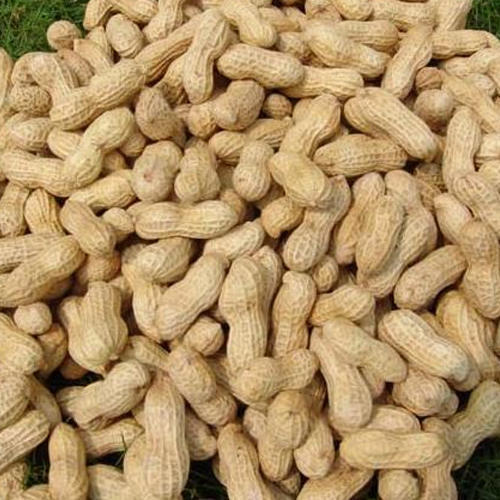
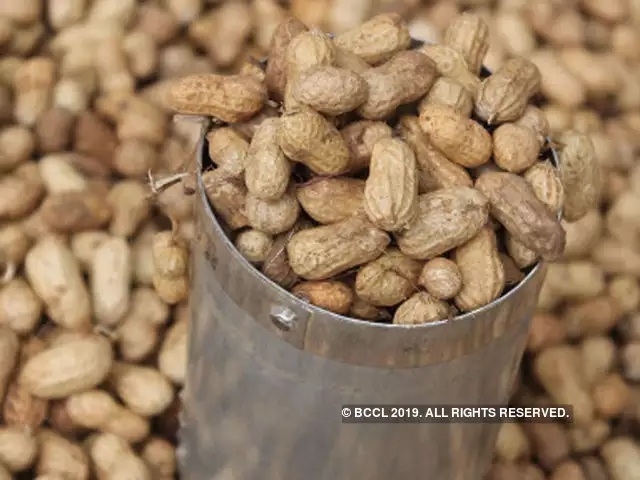
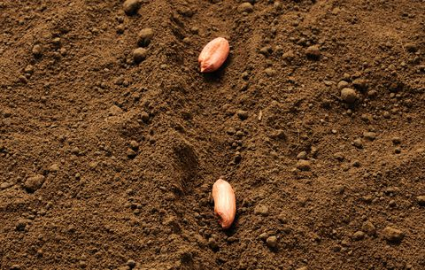
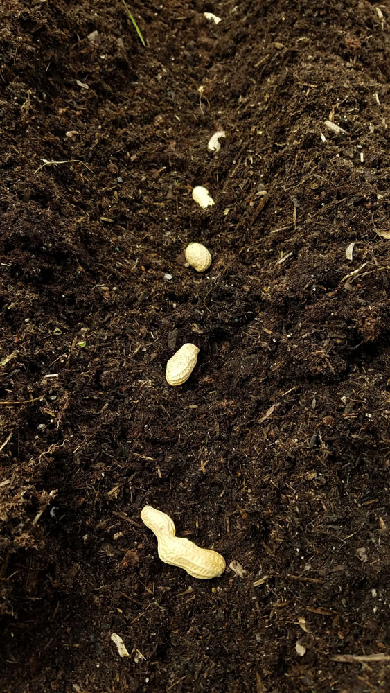


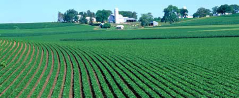
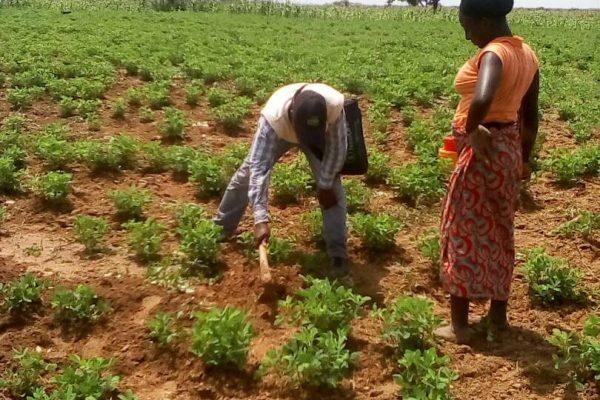
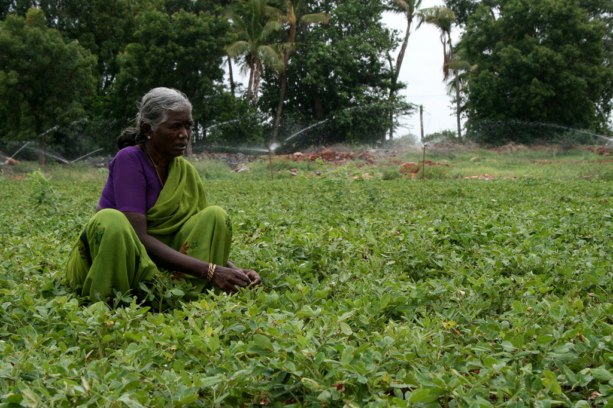
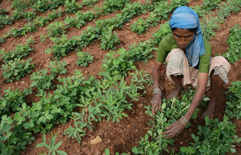

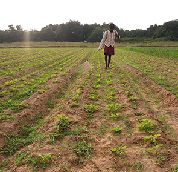

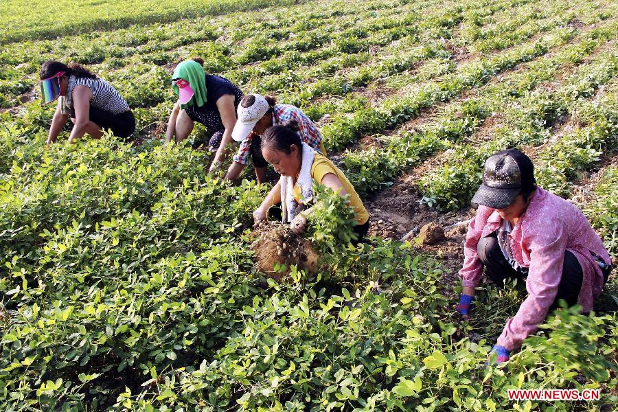

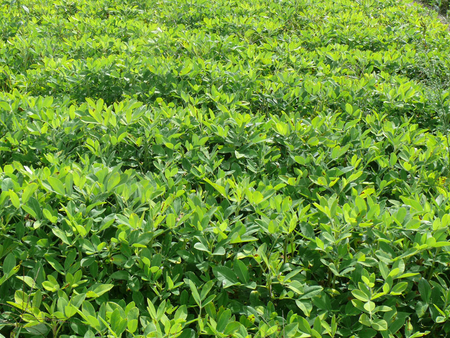
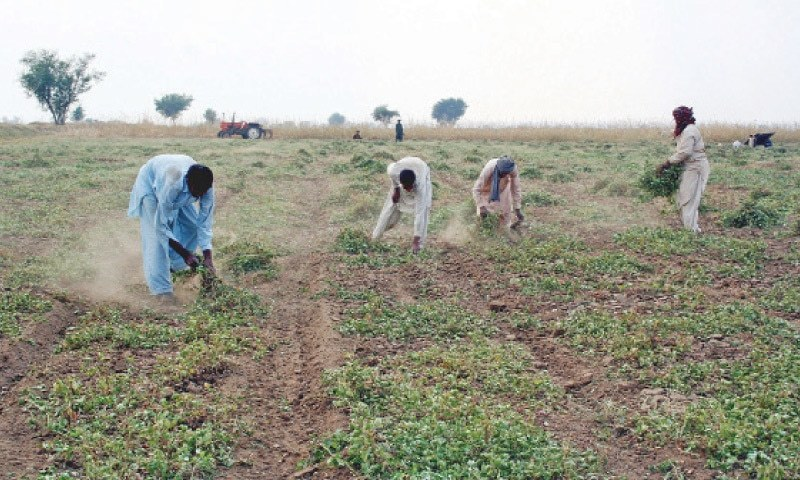
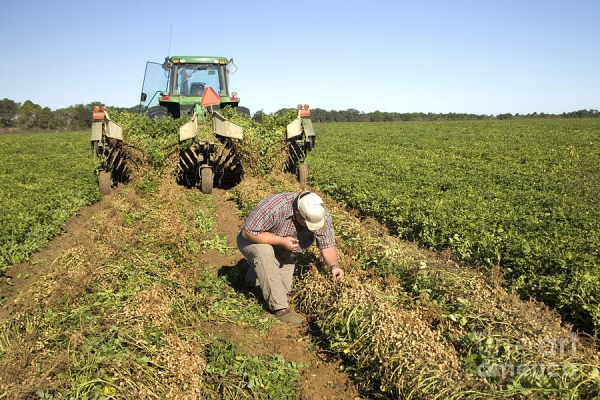
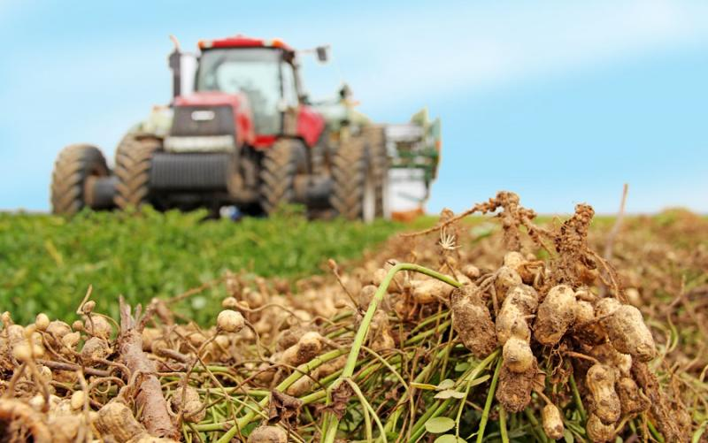
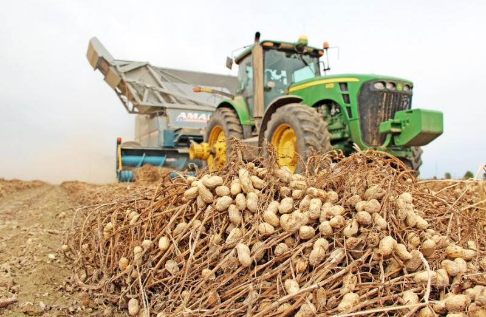


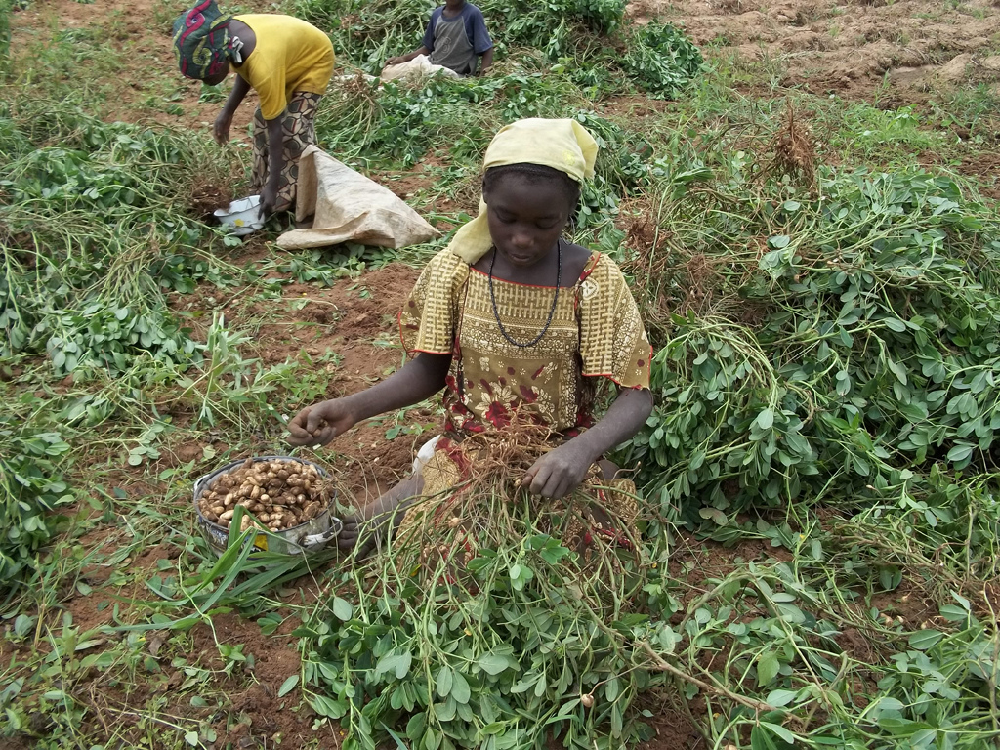
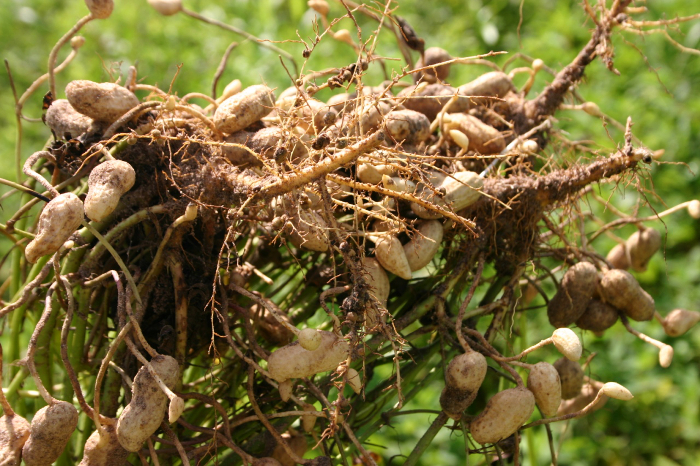
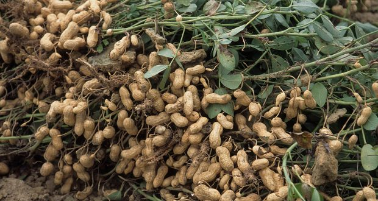
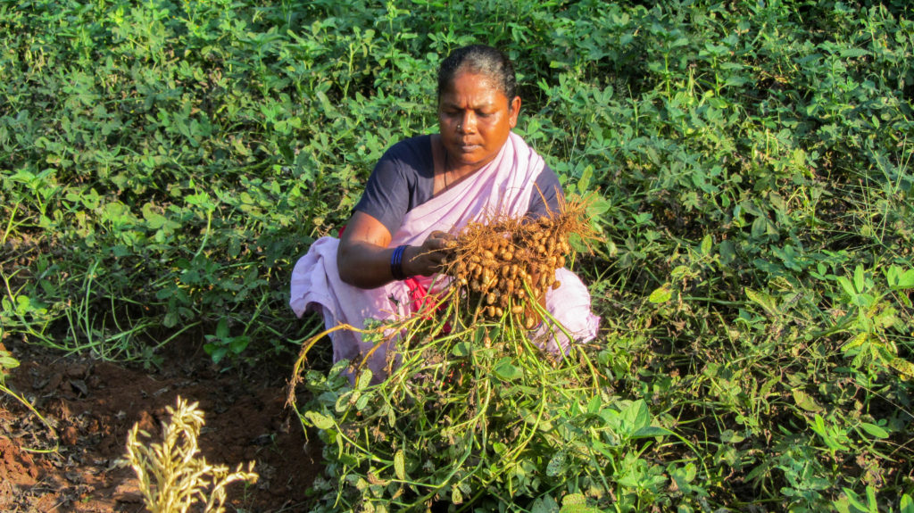
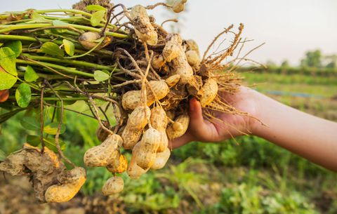
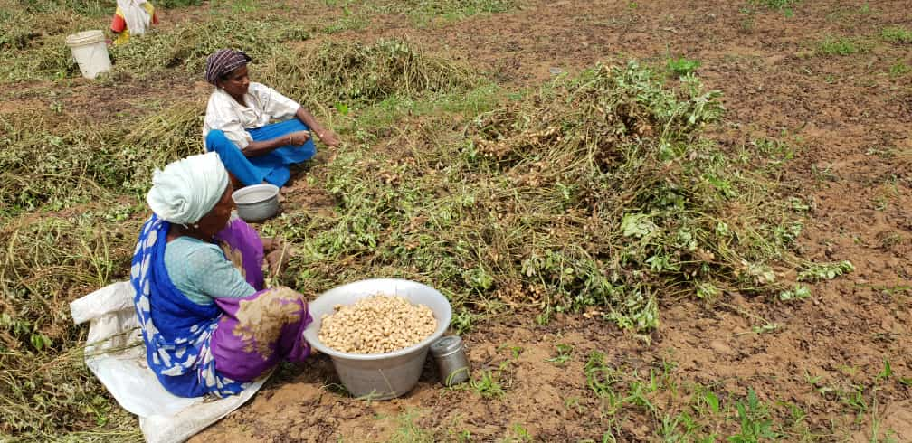
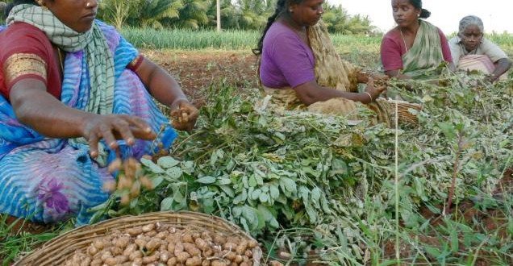
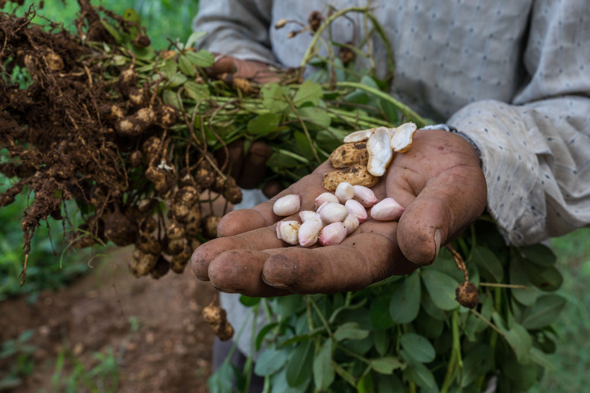
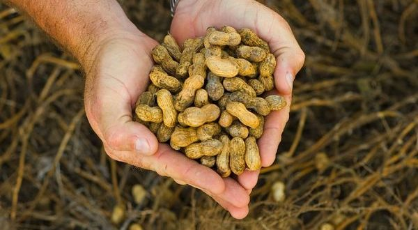
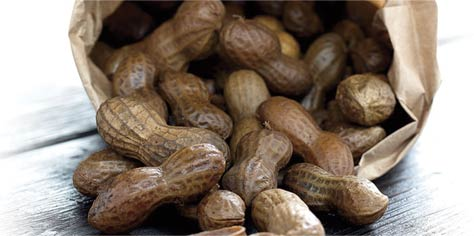
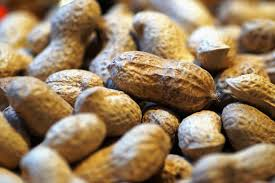
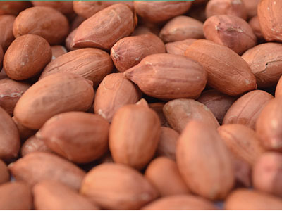